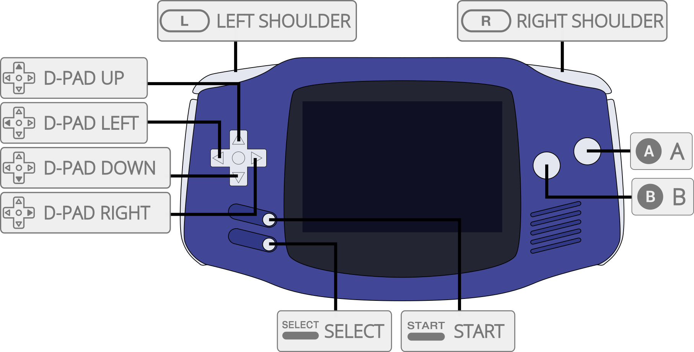

VBA Next is a Game Boy Advance emulator based on VBA-M 2011 with backported patches for performance and compatibility improvements.
The VBA Next core has been authored by
The VBA Next core is licensed under
A summary of the licenses behind RetroArch and its cores can be found here.
Content that can be loaded by the VBA Next core have the following file extensions:
RetroArch database(s) that are associated with the VBA Next core:
Required or optional firmware files go in the frontend's system directory.
!!! warning In order for the Game Boy Advance BIOS to be used, the 'Use bios if available' core option must be set to On.
| Filename | Description | md5sum |
|---|---|---|
| gba_bios.bin | Game Boy Advance Image - Optional | a860e8c0b6d573d191e4ec7db1b1e4f6 |
Frontend-level settings or features that the VBA Next core respects.
| Feature | Supported |
|---|---|
| Restart | ✔ |
| Screenshots | ✔ |
| Saves | ✔ |
| States | ✔ |
| Rewind | ✔ |
| Netplay | ✕ |
| Core Options | ✔ |
| RetroAchievements | ✔ |
| RetroArch Cheats | ✕ |
| Native Cheats | ✕ |
| Controls | ✔ |
| Remapping | ✔ |
| Multi-Mouse | ✕ |
| Rumble | ✕ |
| Sensors | ✕ |
| Camera | ✕ |
| Location | ✕ |
| Subsystem | ✕ |
| Softpatching | ✔ |
| Disk Control | ✕ |
| Username | ✕ |
| Language | ✕ |
| Crop Overscan | ✕ |
| LEDs | ✕ |
The VBA Next core's directory name is 'VBA Next'
The VBA Next core saves/loads to/from these directories.
Frontend's Save directory
Frontend's State directory
The VBA Next core has the following option(s) that can be tweaked from the core options menu. The default setting is bolded.
Settings with (Restart) means that core has to be closed for the new setting to be applied on next launch.
Use bios if available (Restart) [vbanext_bios] (Off/On)
Uses BIOS present in RetroArch's system directory. Look at the BIOS section for more information.
??? note "Use bios if available - On"
The VBA Next core supports the following device type(s) in the controls menu, bolded device types are the default for the specified user(s):

| User 1 Remap descriptors | RetroPad Inputs |
|---|---|
| B |  |
| Select |  |
| Start |  |
| D-Pad Up |  |
| D-Pad Down |  |
| D-Pad Left |  |
| D-Pad Right |  |
| A |  |
| L |  |
| R |  |
| Game | Issue |
|---|---|
| Boktai Trilogy | The solar sensor is not emulated. |
| Croket! 2 – Yami no Bank to Banqueen | Heavy slowdown when approaching the snowman in the beginning. |
| Koro Koro Puzzle Happy Panechu! | The tilt sensor is not emulated. |
| Super Mario Advance 2: Super Mario World (Europe) | The program crashes during the final fight, when Bowser approaches (zoom mode 7) |
| WarioWare: Twisted! | The tilt sensor is not emulated. |
| Yoshi’s Universal Gravitation | The tilt sensor is not emulated. |
??? note "1"